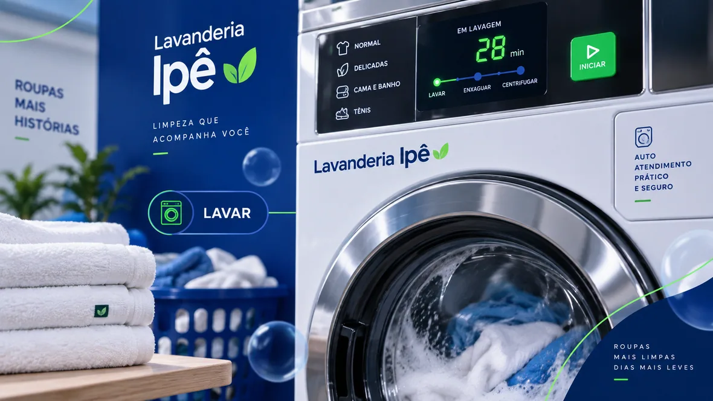

A lavagem
Coloque as roupas respeitando o medidor da máquina, escolha o programa e pronto: sabão líquido e amaciante concentrado são dosados automaticamente.
- Até 10 kg por máquina
- Produtos já inclusos
- Porta travada durante o ciclo
Lavagem